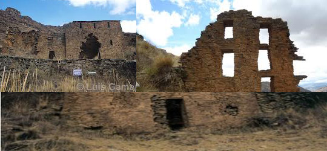
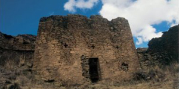
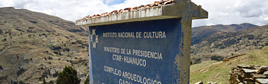

1
1 2
2 3
3 4
4 5
5 6
6 7
7 8
8Complejo Arqueológico de Garu
Ubicación Geográfica
Situado en la ladera de cerro Cóndor Puquio o Cóndor Waganan (donde el cóndor llora), a 2 Kms. del centro poblado de Choras, en la margen izquierda del río Marañón, lado Este del distrito de Choras, perteneciente a la provincia de Yarowilca, región Huánuco.
Entre las coordenadas UTM 18L 0325066 E 8905047 N, y a una altitud de 3 705 m. Entre las coordenadas UTM 18L 0325066 E 8905047 N, y a una altitud de 3 705 m.
Toponimia
El termino “garu” proviene originalmente de la voz en runashimi “karu” que significa “distante o lejos” debido a la condición defensiva y de vigilancia del conjunto arqueológico, por lo que todo extraño de otra comarca debería estar distante del lugar. Otra versión se sustenta en el parecido fonético entre “garu” y “yaru”, siendo errónea esta hipótesis, más por el contrario “yaru” quiere decir “hombre rebelde” y que al añadir “wilca” que significa “nieto”; literalmente Yarowilca seria “nieto rebelde” describiendo el carácter y postura de los habitantes de esta nación.
Clima
Su clima es templado, frió y seco, con marcadas diferencias diurnas entre sol y sombras, que corresponde a la presencia de la Cadena Central de los Andes.Su temperatura media es de 9° C y con precipitaciones estaciónales de setiembre a marzo.
Relieve
Uno de los rasgos más saltantes es su alta densidad habitacional; estratégicamente ubicado a una altura, a 3,700 m. Su perspectiva abarca un amplio panorama del río Marañón, dominando íntegramente la quebrada de Choquevado que está a su lado derecho”. Por consecuente Garu se halla en el piso altitudinal de la región Suni; presentando un relieve accidentado, con valles glaciares y fondos ligeramente ondulado.
La flora típica es de gramíneas y arbustos como el quishuar, quinual y saúco. El dominico, halcón, zorro, zorrillo, etc. representa la fauna local.
Acceso
Accesodesde la ciudad de Huánuco, se toma la carretera afirmada de occidente Huánuco-Chavinillo-La Unión; para de ahí emprender un recorrido de 73 Kms. (3 horas aprox. en automóvil), pasando por los pueblos de Pucuchinche, Canchán, Huayocoto, Pucapuca, Huacalle, Higueras, Huancapallac, Punchao, Pampas, Chasqui, Jacas Chico, Punto Unión, Ayapitec, Llicllatambo (Km.73) para luego tomar un desvío que va hacia el pueblo de Choras, continuando una caminata de 25 minutos por las faldas del cerro Cóndor Puquio donde se asienta el complejo arqueológico de Garu.